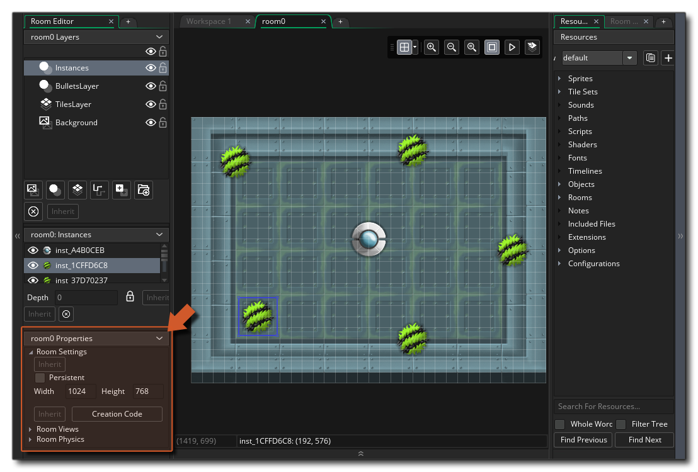
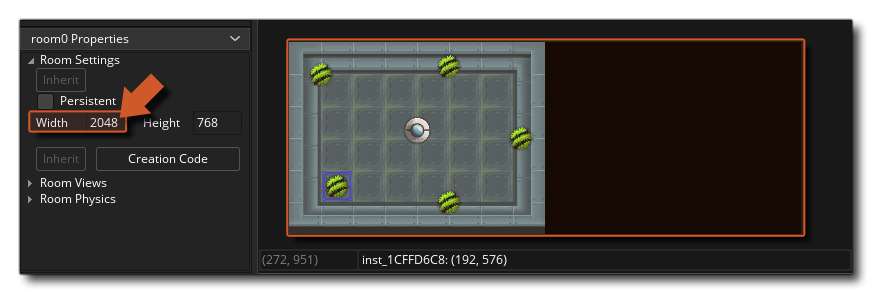
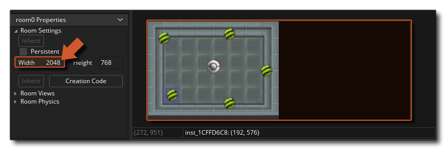
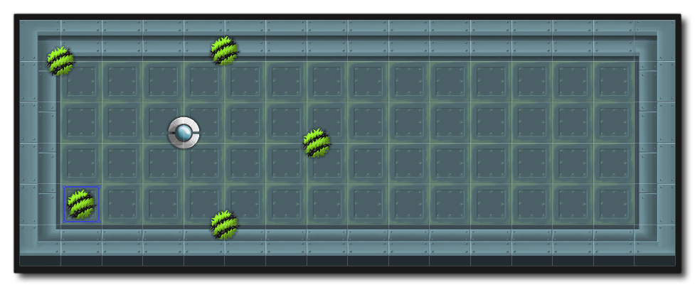

The play area for the game is a bit small so the next thing we are going to do is make the roomsize a bit bigger. This is easily done by simply changing the width and height of the room from the Room Properties, which by default can be found at the bottom left of the room editor window: 
You can see that the default width and height here are 1024x768, but that's too small so let's just double the width value to 2048 by clicking  on the input box and changing it. After you change it you will see that the room in the editor has now expanded to twice its width (you can use the zoom controls to expand the viewable area if you can't see the changes, or alternatively hold down
on the input box and changing it. After you change it you will see that the room in the editor has now expanded to twice its width (you can use the zoom controls to expand the viewable area if you can't see the changes, or alternatively hold down  /
/  and then use the mouse wheel
and then use the mouse wheel  to zoom in/out).

to zoom in/out).

If you run the game at this point, you will find that you now get a massive game window that is way to big for most people to actually play in, so we need to sort that out using cameras. However before we get to that, you should fix the tilemap layer so that it covers the whole room: 